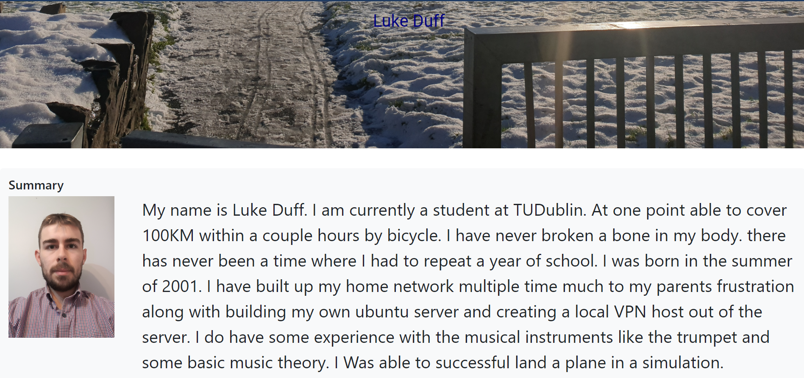
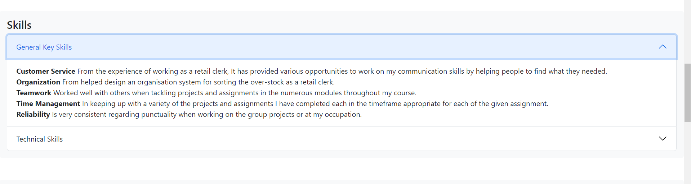
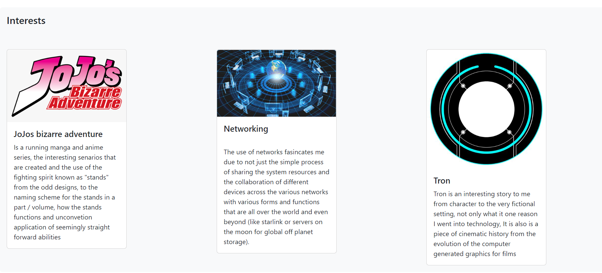
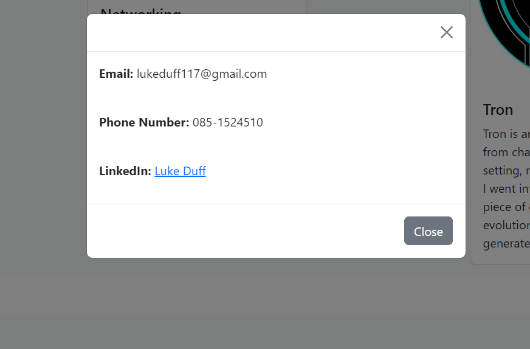

Nav bar
for the navagation bar, using the scrollspy was a recommendation I took along with the search option, the search bar doesn't work unfortuantly yet the scrollspy will function in the same capacity.(for some odd reason the last of the nav links doesn't work but if you use the URL :"file:///E:/IMD_HTML_CV_webpage_project/index.html#scrollspyHeading6" it works as intended
hero/splach screen

For the hero/splach screen I used a sunset to be attention grabbing similar to the example that was shown. Following the recommendations I added a portrait next to summary not just ease of ID but
accordion

the use of an accordian is a simple and effective way to keep every articla and paragraph in a neat order allowing the user not to get completely lost and still get tons of information accross
card

the cards are a simple way of showing small amounts of information
modal card

As recommended by the lecturer the use of the modal cards to hold the contact details
theory used
consistency
when creating the web page having a consistent look throughout and not going over the top and leaving the user with vertigo
clairity
the need for clarity of any website is paramount as not to lose the users when they are going through a webpage
Link to portfolio webpage